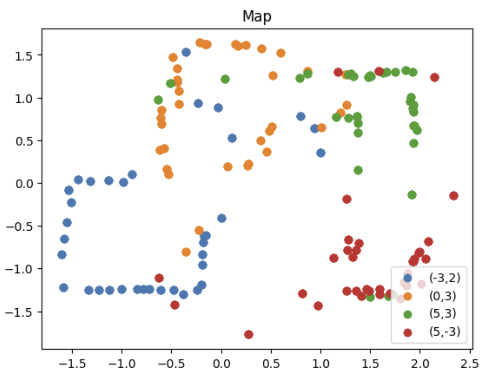

Lab 9 Mapping
The goal of this lab was to use sensor data and transformation matrices in order to create a map of the in-lab arena..
Gathering Data
In order to collect 360 degree data, I used orientation control to incrementally rotate by robot in a full circle in 10 degree segments. I limited each turn to 500 ms in order to avoid too much oscillation due to the integral and derivative control aspects. After the turn was completed, the robot would stay in place and collect 4 data points for each TOF sensor. Because my TOF sensors are 180 degrees apart (one on front and one on the back of the bot) this gave me two datasets from which to estimate the map and get an average reading from. Each TOF would provide a mirrored version of that location relative to the other. Similar to past labs, I used boolean flags to control the mapping process, however I could have done it all within the switch case.
A big challenge was making sure my robot actually spun on axis to get as accurate a set of readings as possible. I managed this in two ways: (1) making the robot spin pretty slowly and (2) adding a "calibration" constant of sort to my turning function, so that the right side of motors were always powered with a PWM that was 5 less than the left motors. The code I used is shown below, plus a video of the robot collecting data...
Preliminary Plotting + Transformation Matrices
I placed the robot at each spot in the arena and ran my mapping command at each location. I then plotted the TOF data in a polar plot against the yaw data (in radians! I first did degrees and it looked crazy...). From this, I could already see the shape of the room starting to come together.
 1.png)
 1.png)
 1.png)
 1.png)
After collecting the data, I began working on transformation matrices to be able to go from polar to cartesian coordinates. I applied the following to each data point: x = distance * cos(theta) and y = distance * sin(theta). From there, I offset the values by the coordinate from which that data point was taken (for example, (-3, -2) had me subtracting 3*304.8mm from x and 2*304.8mm from y). Some transformations also had different signs as needed, to get the correct orientation. The code for that is shown below.

 transform.png)
Full Map + Corrections
After transforming all sets of data, I combined them into a single map. From here, I could already start to see the room take shape.
Based on clusters of points, I was able to establish coordinates and draw a box around the perimeter of the area and the obstacles:

I noticed two main things about my map:
- It was not perfectly straight, which is most easily seen by the corners (specifically the (-3, -2) data)
- The two boxes in the area were not particularly well detected, specifically by the data take at (5, -3). There is a cluster of red points that could be from the box, but ultimately fall short. This means that in my map, the object appears way larger.
The first issue there can be fixed. I went back and offset the yaw values from each data set until I saw better results. I imagine that this slight variation is due to two things. First, small differences in initial orientation would read to slightly different offsets on the final transformed readings. And secondly, gyro drift may have come into play for the last portion of the rotations, or any slight spinning off axis could mess things up. I ended up offsetting each point by the following angles. Again, (5, -3) was the worst:
- (-3, -2): -6 degrees
- (0, 3): 8 degrees
- (5, 3): 2 degrees
- (5, -3): 14 degrees
Adding these offsets did end up helping the outer perimeter of the map quite a bit, though. Here is the new map:

Discussion
This lab showed how sensor data can be used not only to predict robot dynamics, but to understand the local environment. The transformation matrices were very powerful in taking indict data of the room and turning it into a detailed map. I enjoyed this lab!